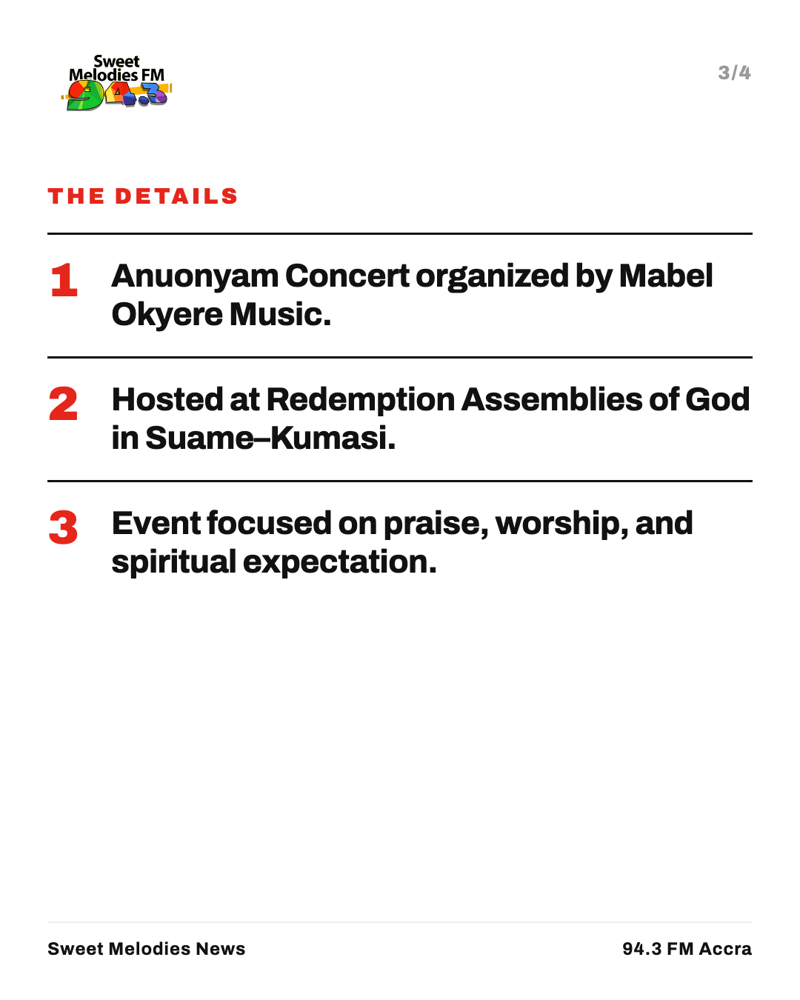
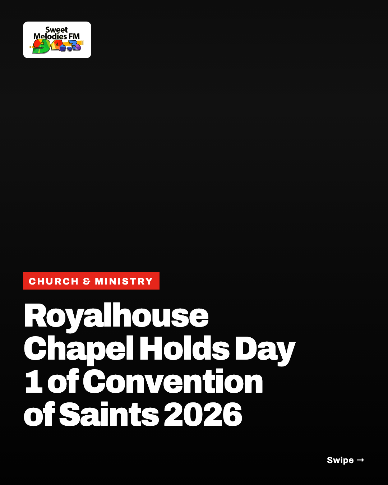
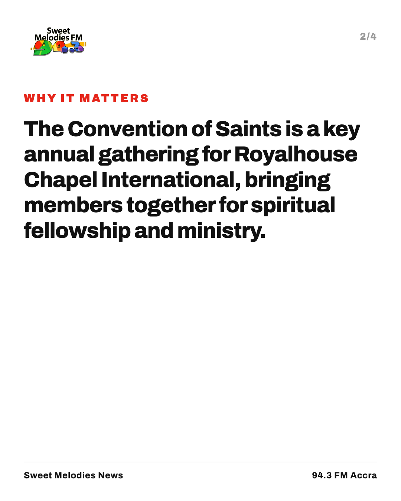
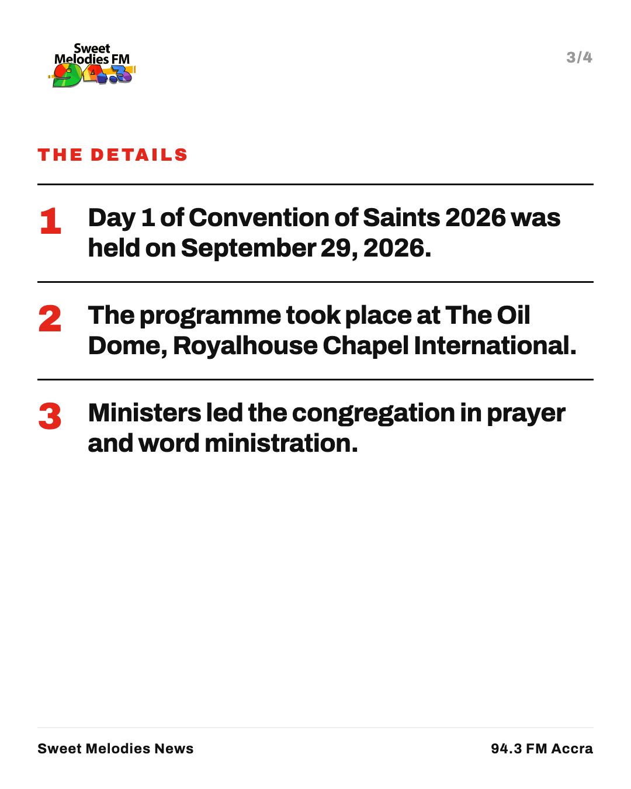
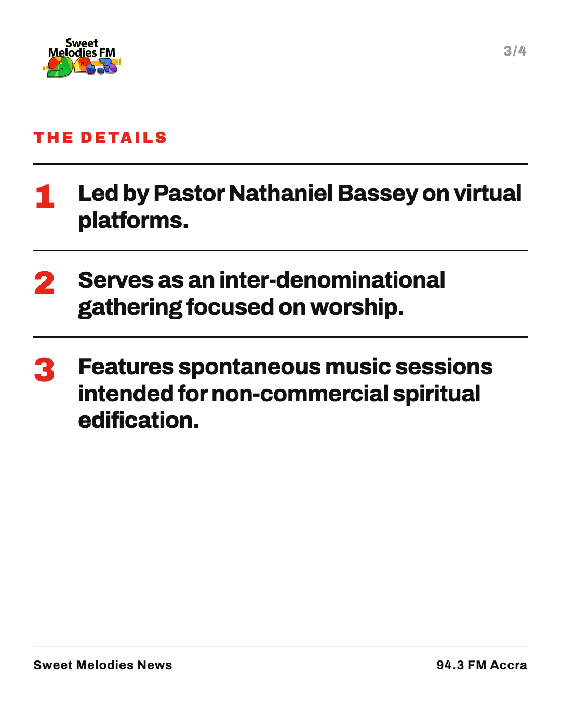
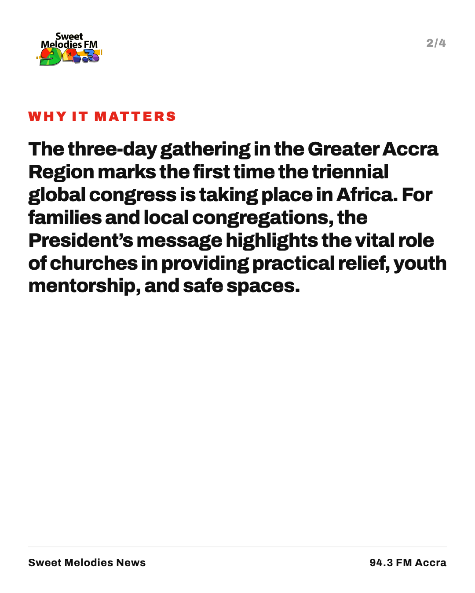
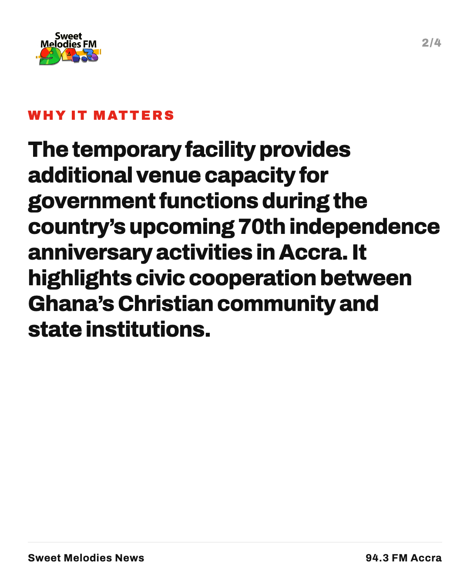
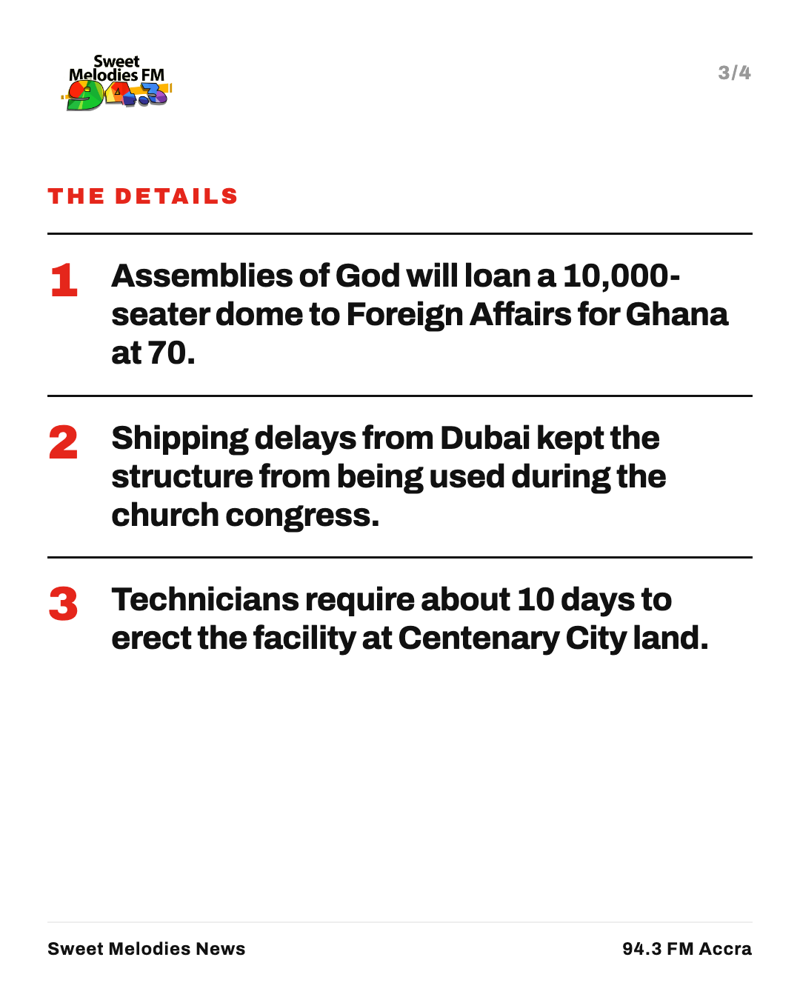

Social
What each story becomes on Instagram, Facebook, X and WhatsApp: a four-slide carousel and a post written for each platform. Scroll the slides sideways.
New Music Friday


Morning Manna


WhatsApp
*Morning Manna* · Thursday 15 October Good morning, blessed family, welcome to today's edition of Morning Manna on Sweet Melodies 94.3 FM. _“Behold, how good and how pleasant it is for brethren to dwell together in unity!”_ — Psalms 133:1 1. *Mabel Okyere Holds Anuonyam Concert in Suame-Kumasi* Gospel artist Mabel Okyere hosted believers in Suame-Kumasi for an uplifting evening of fellowship and worship at the Anuonyam Concert. https://colabourers58-hue.github.io/sweet-melodies-news/story/mabel-okyere-holds-anuonyam-concert-in-suame-kumasi/ 2. *Royalhouse Chapel Holds Day 1 of Convention of Saints 2026* Royalhouse Chapel International has kicked off Day 1 of its annual Convention of Saints, gathering members for spiritual growth. https://colabourers58-hue.github.io/sweet-melodies-news/story/royalhouse-chapel-holds-day-1-of-convention-of-saints-2026/ 3. *Mahama urges churches to protect vulnerable people at Accra congress* At a global Accra congress, President Mahama encouraged churches to support vulnerable people, mentor youth, and offer safe spaces. https://colabourers58-hue.github.io/sweet-melodies-news/story/mahama-urges-churches-to-protect-vulnerable-people-at-accra-congress/ 4. *Hearts of Oak Prepare for Vision FC Following Port City Win* Hearts of Oak aim to build momentum against struggling Vision FC following their recent narrow victory over Port City. https://colabourers58-hue.github.io/sweet-melodies-news/story/hearts-of-oak-prepare-for-vision-fc-following-port-city-win/ 5. *Brazil Senate Approves Shorter Workweek Ahead of Runoff Election* Brazil's Senate has approved a shorter workweek as the nation prepares for a closely contested presidential runoff election. https://colabourers58-hue.github.io/sweet-melodies-news/story/brazil-senate-approves-shorter-workweek-ahead-of-runoff-election/ Listen live: Sweet Melodies 94.3 FM
gospel-top-10


Mabel Okyere Holds Anuonyam Concert in Suame-Kumasi


X
Mabel Okyere Music hosted the Anuonyam Concert at Redemption Assemblies of God in Suame–Kumasi. Watch the recording now. https://colabourers58-hue.github.io/sweet-melodies-news/story/mabel-okyere-holds-anuonyam-concert-in-suame-kumasi/
Instagram
Mabel Okyere Music hosted the Anuonyam Concert at Redemption Assemblies of God in Suame–Kumasi. Catch the video recording online.
Facebook
Mabel Okyere Music has held the Anuonyam Concert at the Redemption Assemblies of God in Suame–Kumasi. Watch the full event online. https://colabourers58-hue.github.io/sweet-melodies-news/story/mabel-okyere-holds-anuonyam-concert-in-suame-kumasi/
Whatsapp
*Mabel Okyere Holds Anuonyam Concert in Suame-Kumasi* Mabel Okyere Music hosted the Anuonyam Concert at Redemption Assemblies of God, Suame–Kumasi. Watch full video: https://colabourers58-hue.github.io/sweet-melodies-news/story/mabel-okyere-holds-anuonyam-concert-in-suame-kumasi/
Royalhouse Chapel Holds Day 1 of Convention of Saints 2026




X
Day 1 of Convention of Saints 2026 (#COS2026) kicked off at The Oil Dome with Royalhouse Chapel International. https://colabourers58-hue.github.io/sweet-melodies-news/story/royalhouse-chapel-holds-day-1-of-convention-of-saints-2026/
Instagram
Royalhouse Chapel International has opened Day 1 of the Convention of Saints 2026 (#COS2026) at The Oil Dome, featuring prayer and word ministration.
Facebook
Royalhouse Chapel International has launched the Convention of Saints 2026 at The Oil Dome. Believers gathered for prayer and word ministration during the opening Day 1 service. https://colabourers58-hue.github.io/sweet-melodies-news/story/royalhouse-chapel-holds-day-1-of-convention-of-saints-2026/
Whatsapp
*Royalhouse Chapel Holds Day 1 of Convention of Saints 2026*
Royalhouse Chapel International has opened the Convention of Saints 2026 at The Oil Dome. Catch up on the full service broadcast here: {https://colabourers58-hue.github.io/sweet-melodies-news/story/royalhouse-chapel-holds-day-1-of-convention-of-saints-2026/}Pastor Nathaniel Bassey Hosts Day 4 of October 2026 Hallelujah Challenge


X
Pastor Nathaniel Bassey hosts Day 4 of the October 2026 Hallelujah Challenge virtual worship session. Watch the full video here. https://colabourers58-hue.github.io/sweet-melodies-news/story/pastor-nathaniel-bassey-hosts-day-4-of-october-2026-hallelujah-challen/
Instagram
Day 4 of the October 2026 Hallelujah Challenge with Pastor Nathaniel Bassey is out! The inter-denominational virtual fellowship focuses on edifying believers through worship.
Facebook
Pastor Nathaniel Bassey has published Day 4 of the October 2026 Hallelujah Challenge. The online inter-denominational gathering brings believers together for spontaneous worship and fellowship. https://colabourers58-hue.github.io/sweet-melodies-news/story/pastor-nathaniel-bassey-hosts-day-4-of-october-2026-hallelujah-challen/
Whatsapp
*Pastor Nathaniel Bassey Hosts Day 4 of October 2026 Hallelujah Challenge*
Day 4 of the virtual worship gathering has been posted. Watch the full service here: {https://colabourers58-hue.github.io/sweet-melodies-news/story/pastor-nathaniel-bassey-hosts-day-4-of-october-2026-hallelujah-challen/}Hearts of Oak Prepare for Vision FC Following Port City Win

X
Hearts of Oak coach Nebojsa Kapor has called for better preparation ahead of their Ghana Premier League match against Vision FC, who enter the game on a five-match winless run. #GPL https://colabourers58-hue.github.io/sweet-melodies-news/story/hearts-of-oak-prepare-for-vision-fc-following-port-city-win/
Instagram
Hearts of Oak prepare for a crucial clash against Vision FC. Coach Nebojsa Kapor credited team mentality for a recent win over Port City. Vision FC aim to snap a five-game winless streak. Full story: link in bio #heartsofoak #visionfc #ghanapremierleague #ghanasport
Facebook
Accra Hearts of Oak coach Nebojsa Kapor wants his team to prepare better as they host Vision FC in the Ghana Premier League. While Hearts recently bounced back with a win over Port City, Vision FC are desperate to end a five-game winless run. Read the full match preview on our website. https://colabourers58-hue.github.io/sweet-melodies-news/story/hearts-of-oak-prepare-for-vision-fc-following-port-city-win/
Whatsapp
*Hearts of Oak Prepare for Vision FC Clash* Coach Nebojsa Kapor urges fans to turn out as Hearts look to build momentum. Vision FC enter the match on a five-game winless run. https://colabourers58-hue.github.io/sweet-melodies-news/story/hearts-of-oak-prepare-for-vision-fc-following-port-city-win/
Historic Cleveland church receives $750,000 grant for building restoration
X
Shiloh Baptist Church in Cleveland, Ohio, has received a $750,000 grant to repair structural damage to its historic building. Restoration work is set to begin in early 2027. #ChristianNews https://colabourers58-hue.github.io/sweet-melodies-news/story/historic-cleveland-church-receives-750000-grant-for-building-restorati/
Instagram
Historic Cleveland church receives $750,000 grant to repair aging sanctuary. Shiloh Baptist Church secured federal funding to fix foundation issues and water damage. The historic church hosted Dr Martin Luther King Jr. in 1967. Restoration work is set to start in early 2027. Full story: link in bio #ChristianNews #ChurchHistory #Cleveland #SweetMelodiesFM #CivilRights Photo: The Christian Post.
Facebook
Shiloh Baptist Church in Cleveland, Ohio, has been awarded a $750,000 grant from the National Park Service to repair structural damage. The historic sanctuary hosted Dr Martin Luther King Jr. in 1967 and served as a refuge during the Great Migration. Read the full story on our website. https://colabourers58-hue.github.io/sweet-melodies-news/story/historic-cleveland-church-receives-750000-grant-for-building-restorati/
Whatsapp
*Historic church receives $750,000 grant for repairs* Shiloh Baptist Church in Cleveland, Ohio, has secured federal funding to fix structural damage. Read more: https://colabourers58-hue.github.io/sweet-melodies-news/story/historic-cleveland-church-receives-750000-grant-for-building-restorati/
Pakistan suspends Imran Khan party government in Khyber Pakhtunkhwa

X
Pakistan suspends the provincial government of Khyber Pakhtunkhwa and imposes emergency rule following protests by supporters of jailed former leader Imran Khan. #Pakistan https://colabourers58-hue.github.io/sweet-melodies-news/story/pakistan-suspends-imran-khan-party-government-in-khyber-pakhtunkhwa/
Instagram
Pakistan suspends the local government of Khyber Pakhtunkhwa and imposes emergency rule. Authorities deployed troops and blocked roads after demonstrations by supporters of jailed former leader Imran Khan. Protesters clashed with police officers, while internet access and schools were briefly shut. Full story: link in bio #pakistan #khyberpakhtunkhwa #imrankhan #worldnews Photo: Al Jazeera.
Facebook
Pakistan's federal government has suspended the provincial administration of Khyber Pakhtunkhwa and declared emergency rule. The move follows widespread street protests demanding the release of former Prime Minister Imran Khan. Security forces clashed with demonstrators in several areas before internet services were restored. Read the full story on our website. https://colabourers58-hue.github.io/sweet-melodies-news/story/pakistan-suspends-imran-khan-party-government-in-khyber-pakhtunkhwa/
Whatsapp
*Pakistan declares emergency rule in Khyber Pakhtunkhwa* Federal authorities suspend provincial government and deploy security forces following mass opposition protests. https://colabourers58-hue.github.io/sweet-melodies-news/story/pakistan-suspends-imran-khan-party-government-in-khyber-pakhtunkhwa/
Brazil Senate Approves Shorter Workweek Ahead of Runoff Election

X
Brazil's Senate has approved a shorter workweek in a major win for President Lula ahead of the presidential runoff. Meanwhile, a Quaest poll shows Flavio Bolsonaro slightly ahead. https://colabourers58-hue.github.io/sweet-melodies-news/story/brazil-senate-approves-shorter-workweek-ahead-of-runoff-election/
Instagram
Brazil's Senate approves a shorter workweek ahead of the presidential runoff election. AP News reports the vote is a major win for President Lula. Reuters reports a Quaest poll shows Flavio Bolsonaro slightly ahead. Full story: link in bio #Brazil #Lula #Bolsonaro #WorldNews
Facebook
Brazil's Senate has approved a shorter workweek, marking a major legislative win for President Luiz Inácio Lula da Silva ahead of the presidential runoff election. At the same time, new Quaest polling reported by Reuters shows candidate Flavio Bolsonaro slightly ahead. Read the full update on our website. https://colabourers58-hue.github.io/sweet-melodies-news/story/brazil-senate-approves-shorter-workweek-ahead-of-runoff-election/
Whatsapp
*Brazil Senate Approves Shorter Workweek Ahead of Runoff* Lawmakers have passed the measure in a win for President Lula, while polling shows Flavio Bolsonaro slightly ahead. https://colabourers58-hue.github.io/sweet-melodies-news/story/brazil-senate-approves-shorter-workweek-ahead-of-runoff-election/
Mahama urges churches to protect vulnerable people at Accra congress


X
President Mahama has urged church leaders at the Assemblies of God congress in Accra to protect children, mentor youth, and provide practical community support. #Accra2026 https://colabourers58-hue.github.io/sweet-melodies-news/story/mahama-urges-churches-to-protect-vulnerable-people-at-accra-congress/
Instagram
President John Dramani Mahama has called on churches to protect vulnerable people and serve their communities. Speaking at the World Assemblies of God Congress in Accra, the President urged leaders to mentor young people and support schools. The gathering brings over 10,000 delegates to Accra for the first African-hosted congress. Full story: link in bio #SweetMelodiesFM #AssembliesOfGod #GhanaNews #Accra Photo: MyJoyOnline.
Facebook
President John Dramani Mahama has urged churches to translate faith into practical care by protecting children, mentoring young people, and supporting local communities. Addressing over 10,000 delegates at the World Assemblies of God Congress in Accra, he stressed that spiritual authority carries a duty of care. Read the full story on our website. https://colabourers58-hue.github.io/sweet-melodies-news/story/mahama-urges-churches-to-protect-vulnerable-people-at-accra-congress/
Whatsapp
*Mahama urges churches to protect children and support communities* President Mahama addressed over 10,000 delegates at the Assemblies of God congress in Accra on Wednesday. Read the full update here: https://colabourers58-hue.github.io/sweet-melodies-news/story/mahama-urges-churches-to-protect-vulnerable-people-at-accra-congress/
Assemblies of God loans 10,000-seater dome for Ghana at 70 celebrations



X
Assemblies of God Ghana will loan its 10,000-seater dome to the Foreign Affairs Ministry for Ghana at 70 celebrations after technical delays kept it from being used for its global congress in Accra. #GhanaAt70 https://colabourers58-hue.github.io/sweet-melodies-news/story/assemblies-of-god-loans-10000-seater-dome-for-ghana-at-70-celebrations/
Instagram
Assemblies of God Ghana will loan its new 10,000-seater dome to the Ministry of Foreign Affairs for Ghana at 70 national events. Shipping delays from Dubai prevented the church from assembling the structure for its ongoing world congress in Accra. The facility is being moved to Centenary City land for assembly. Full story: link in bio #AssembliesOfGod #GhanaAt70 #Accra #GhanaNews #SweetMelodiesFM Photo: MyJoyOnline.
Facebook
Assemblies of God Ghana is lending its newly arrived 10,000-seater dome to the Ministry of Foreign Affairs for upcoming Ghana at 70 anniversary activities. Shipping delays from Dubai prevented the facility from being set up in time for the ongoing 10th World Assemblies of God Congress in Accra. Read the full update on our website. https://colabourers58-hue.github.io/sweet-melodies-news/story/assemblies-of-god-loans-10000-seater-dome-for-ghana-at-70-celebrations/
Whatsapp
*Assemblies of God loans 10,000-seater dome for Ghana at 70* Shipping delays kept the church from using the venue for its world congress in Accra. The facility will now be set up at Centenary City for state functions. https://colabourers58-hue.github.io/sweet-melodies-news/story/assemblies-of-god-loans-10000-seater-dome-for-ghana-at-70-celebrations/
University of Ghana unions march against security outsourcing plans

X
Four staff unions at the University of Ghana marched on campus on Wednesday to oppose plans to outsource security services to a private firm. Management promised to review their petition. #Legon https://colabourers58-hue.github.io/sweet-melodies-news/story/university-of-ghana-unions-march-against-security-outsourcing-plans/
Instagram
Unions at the University of Ghana have petitioned management to stop plans to outsource campus security. Staff associations raised concerns about job security and nearly five months of unpaid union dues. Registrar Michael Opare Atuah promised that management will examine the demands. Full story: link in bio #UniversityOfGhana #Legon #UGUnions #GhanaNews Photo: 3News.
Facebook
Four labour unions at the University of Ghana marched across campus on Wednesday to oppose plans to outsource security services to a private contractor. Union leaders warned against potential job losses and highlighted nearly five months of unpaid staff dues. University Registrar Michael Opare Atuah accepted the petition and promised management will engage the unions. Read the full story on our website. https://colabourers58-hue.github.io/sweet-melodies-news/story/university-of-ghana-unions-march-against-security-outsourcing-plans/
Whatsapp
*University of Ghana staff unions protest security outsourcing plans* Workers at Legon submitted a petition demanding an immediate halt to private security contracting. Management promised to review their demands and engage union leaders. https://colabourers58-hue.github.io/sweet-melodies-news/story/university-of-ghana-unions-march-against-security-outsourcing-plans/
Salvation Ministries Begins Ghana Miracle Crusade 2026


X
Salvation Ministries held Day 1 of its Ghana Miracle Crusade on Oct 2, 2026, featuring teaching by Pastor David Ibiyeomie. https://colabourers58-hue.github.io/sweet-melodies-news/story/salvation-ministries-begins-ghana-miracle-crusade-2026/
Instagram
Salvation Ministries launched Day 1 of the Ghana Miracle Crusade on Friday, October 2, 2026, with Presiding Pastor David Ibiyeomie leading the service.
Facebook
Salvation Ministries has held Day 1 of the Ghana Miracle Crusade on Friday, October 2, 2026. Presiding Pastor David Ibiyeomie delivered an expository teaching during the service. Watch the full broadcast below. https://colabourers58-hue.github.io/sweet-melodies-news/story/salvation-ministries-begins-ghana-miracle-crusade-2026/
Whatsapp
*Salvation Ministries Begins Ghana Miracle Crusade 2026* Day 1 of the crusade was held on Friday, October 2, led by Pastor David Ibiyeomie. Watch the full service here: https://colabourers58-hue.github.io/sweet-melodies-news/story/salvation-ministries-begins-ghana-miracle-crusade-2026/
Minister Theophilus Sunday Holds Tarry Nyanya 2026 Day 1


X
Minister Theophilus Sunday has held Day 1 of Tarry Nyanya 2026 under the theme 'Midwives'. Watch the full session now. https://colabourers58-hue.github.io/sweet-melodies-news/story/minister-theophilus-sunday-holds-tarry-nyanya-2026-day-1/
Instagram
Minister Theophilus Sunday has hosted Day 1 of Tarry Nyanya 2026, themed 'Midwives.' Watch the full recording online. #SweetMelodiesFM #TheophilusSunday #TarryNyanya2026
Facebook
Gospel minister Theophilus Sunday has held Day 1 of Tarry Nyanya 2026, focused on the theme 'Midwives.' You can catch up on the full programme online. https://colabourers58-hue.github.io/sweet-melodies-news/story/minister-theophilus-sunday-holds-tarry-nyanya-2026-day-1/
Whatsapp
*Minister Theophilus Sunday Holds Tarry Nyanya 2026 Day 1*
Gospel minister Theophilus Sunday has hosted Day 1 of Tarry Nyanya 2026, themed 'Midwives.' Watch the full recording below: {https://colabourers58-hue.github.io/sweet-melodies-news/story/minister-theophilus-sunday-holds-tarry-nyanya-2026-day-1/}